In the previous lab you graphed two variables where the response variable was categorical, in one example the explanatory variable was numerical and one where the explanatory variable was categorical.
For this example we will look at the scenario where the response variable is quantitative.
Now we are interested in the associated between the percent of the population living in urban setting within each country, and in the country's rates of internet use, that is the percent of people which access to the world wide web.
Here are the details from the codebook for the variables we are interested in.
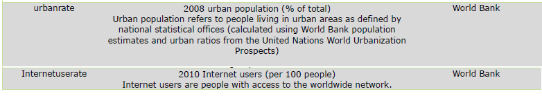
For this research question both the response and explanatory variables are quantitative variables.
A bar chart would not work in this situation, the graph of choice is the scatterplot.
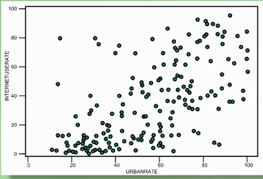
A scatterplot by definition is a graph of plotted point that show the relationship between two quantitative variables.
In a scatterplot, data for each observations explanatory and response variable are plotted.
This scatterplot shows a sample of 11 observations according to the relationship between height and weight.
Since we are dealing with a new data set the Gapminder data set, we will start a new python program.
Include your import statement as before.
Save the gapminder.csv file to your Spyder working directory.
Write the statement necessary to read in the gapminder.csv File
Next we need to make sure that both variables are seen as numeric by Python. Look back on previous labs to find the correct syntax for using the to_numeric() function in the Pandas library.
If the conversion is not working it may be because there are spaces or blanks in some observations for one or both of these variables.
You may have to use .replace() function to find any ' ' and replace with numpy.NaN again check back on previous lab files.
Once you have the conversions complete you can then describe each variable.
Write the statements to describe each variable and print the output so you can see the count, mean, standard deviation etc for each variable.
You should see the following descriptive stats for each variable:
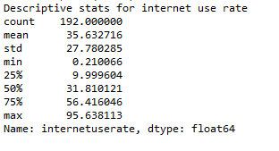
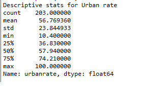
We can see for urban rate, the mean percent of the population living in Urban settings is about 57%, the standard deviation is about 24%, suggesting that there is quite a bit of variability from country to country in terms of the population living in urban settings.
Is there a relationship between the two variables?
We can explore this question using a scatterplot.
Python provides the capability to produce a scatterplot using the seaborn library.
#basic scatterplot
scat1 = seaborn.regplot(x="urbanrate", y="internetuserate", fit_reg=False, data=gapminder_data)
plt.xlabel('Urban Rate')
plt.ylabel('Internet Use Rate')
plt.title('Scatterplot for the Association between Urban Rate and Internet Use Rate')The explanatory variable is urban rate so it goes on the X axis, the response variable Internet Use Rate goes on the Y axis. For this example we ask python to suppress the line of best fit. Again we use the xlabel, ylabel and title functions.
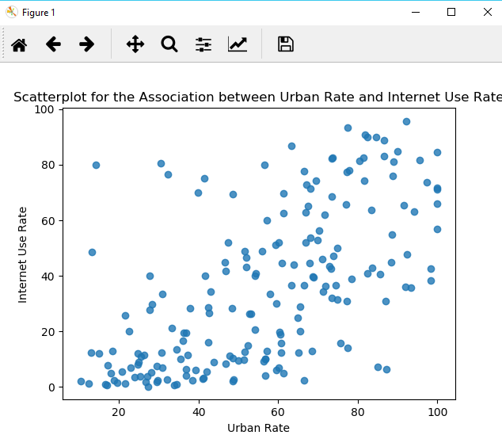
Here we can see what looks like a positive relationship between urban rate and internet use rate. Change the code slightly so that the best fit line is displayed.
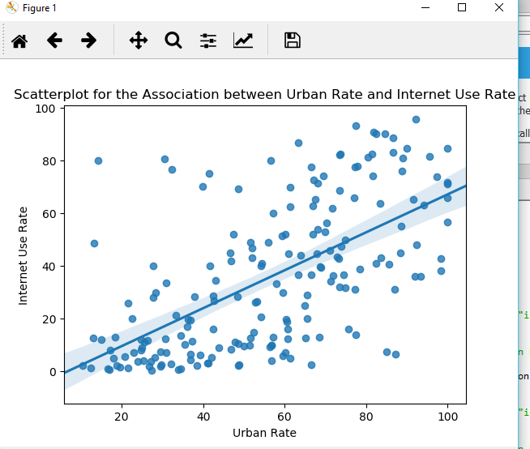
Try plotting a scatter chart now for the explanatory variable incomeperperson with the response variable internetuserate. What relationship does this chart present? Is it stronger or weaker than the previous relationship?
How closely do the dots follow the linear pattern?
These examples show the different types of relationships presented by a scatter plot.
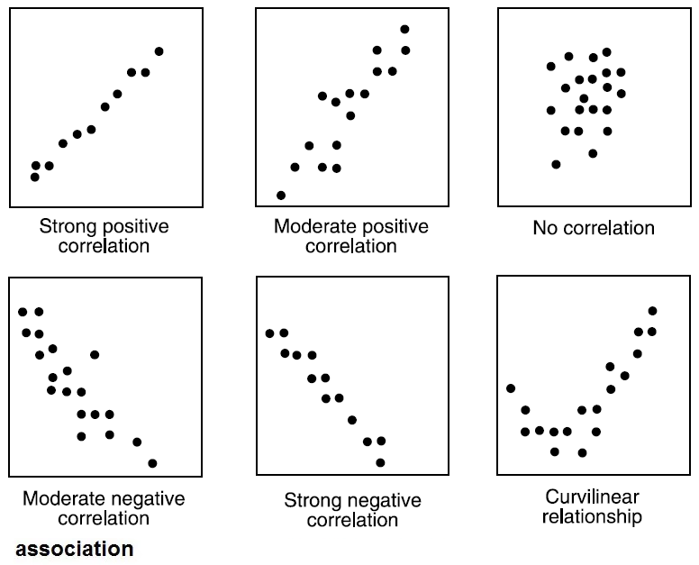
Not all relationships can be classified as positive or negative. Also if you can't plausibly put a line through the dots, if the dots are just a cloud of specks on a graph, then there may be no relationship.
Create the scatter plot for response variable "hivrate" and explanatory variable "incomeperperson"
Remember to make sure both variables are numeric.
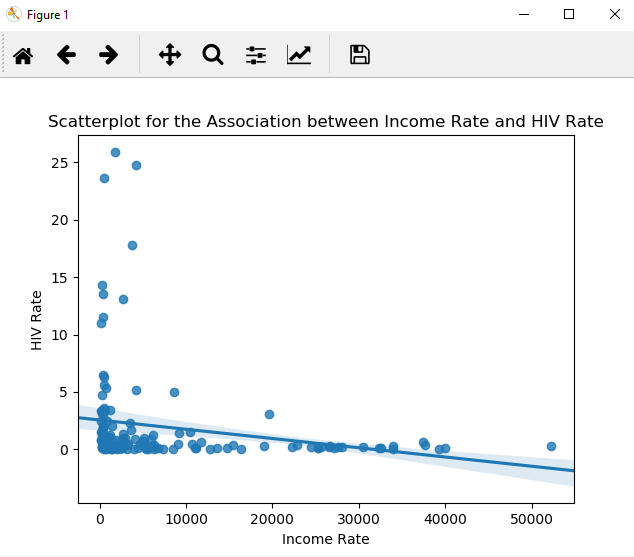
Here the dots seem to clump in the lower part of the graph. In this case it is hard to determine the relationship here.
To get a better sense of whether or not there is a relationship between these two variables, we could try and convert the incomeperperson explanatory variable into a categorical variable.
To do this we have to do some data management.
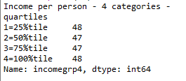
Now you can see the distribution of the incomegrp4 variable. The four ordered groups we created, show that there are 48 in the lowest income group, 47 in the next 25%, 47 in the next 25% and 48 in the top 25%.
With this new categorical explanatory variable, you can now create the last type of bivariate graph, that is the categorical to quantitative bar chart.
The code to use is identical to that used for the categorical to categorical graph but what will be plotted on the y-axis is the mean HIV rate.
#bivariate bar graph C->Q
seaborn.factorplot(x='incomegrp4',y='hivrate',data=gapminder_data,kind='bar',ci=None)
plt.xlabel('income group')
plt.ylabel('mean HIV rate')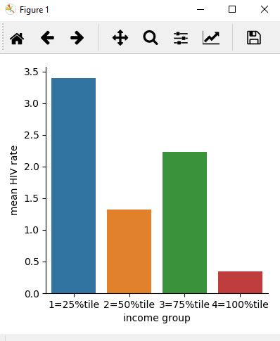
In this bar chart we can see the differences in HIV rate based on the counties income per person groups.
Explanatory variable on the X axis (categorical), the proportion of our response variable on the Y axis (2 group categorical).
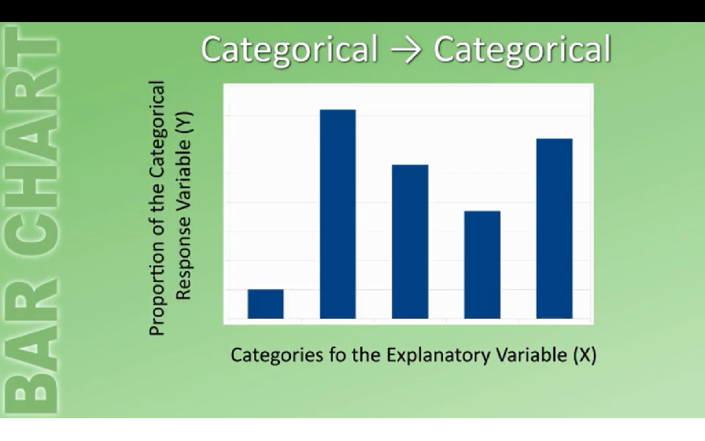
Explanatory variable on the X axis (Categorical), Mean of the response variable (quantitative) on the Y axis.
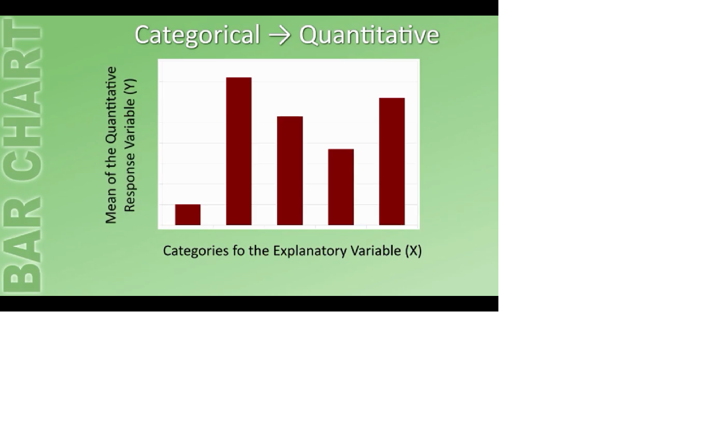
Explanatory variable values on the X axis (quantitative), response variable values on the Y axis (quantitative)
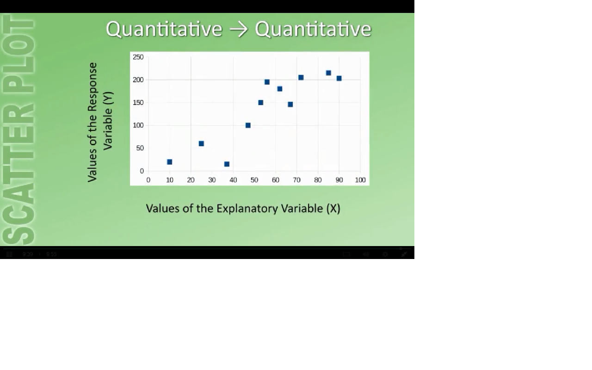
Apply what you have learned to your continuous assessment work.